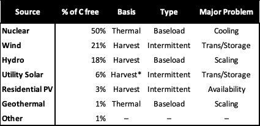

I’m Jonathan Burbaum, and this is Healing Earth with Technology: a weekly, Science-based, subscriber-supported serial. In this serial, I offer a peek behind the headlines of science, focusing (at least in the beginning) on climate change/global warming/decarbonization. I welcome comments, contributions, and discussions, particularly those that follow Deming’s caveat , “In God we trust. All others, bring data.” The subliminal objective is to open the scientific process to a broader audience so that readers can discover their own truth, not based on innuendo or ad hominem attributions but instead based on hard data and critical thought.
You can read Healing for free, and you can reach me directly by replying to this email. If someone forwarded you this email, they’re asking you to sign up. You can do that by clicking here .
If you really want to help spread the word, then pay for the otherwise free subscription. I use any fees to increase readership through Facebook and LinkedIn ads.
Today’s read: 6 minutes.
Henry Ford didn’t invent the automobile, but he changed the world by making personal automobiles affordable to more consumers.
How?
Well, it turns out that he determined the selling price of the Model T before designing it and then developing both a product and manufacturing process to make vehicles profitably at that price. This is known as a “market-oriented” pricing strategy—when you know what customers are willing to pay, cost reduction becomes profit maximization. In my experience, most techno-economic analyses, particularly those for new technologies in energy, do the opposite. They use a “cost-oriented” pricing strategy where manufacturing costs are estimated and profit is added at the end, almost as an afterthought. There are at least three problems with this approach. First, it’s much too easy to fool yourself—costs appear attractive because parts of the process, like transportation or maintenance, have been omitted. Second, particularly in energy, there are always alternatives. These alternatives vary widely in cost but provide indistinguishable value to the consumer (therefore priced identically). This approach offers a straightforward competitive response for incumbents, who only need to reduce their prices enough to make new technologies unprofitable. Finally, because success vs. failure in energy depends almost entirely on price, errors in the cost-oriented approach are remedied by optimism. In contrast, errors in the market-oriented approach must be remedied by ingenuity.
Here’s what Ford himself said about the process:
“The "Model T" had practically no features which were not contained in some one or other of the previous models. 1 Every detail had been fully tested in practice. There was no guessing as to whether or not it would be a successful model. It had to be. There was no way it could escape being so, for it had not been made in a day. It contained all that I was then able to put into a motor car plus the material, 2 which for the first time I was able to obtain.” Henry Ford’s Autobiography, “My Life and Work” Chapter 5, The Secret of Manufacturing and Serving.
The story continues…
Let’s reiterate what the problem is and how possible solutions are constrained. Stated concisely:
-
The increase in carbon dioxide levels in the atmosphere, attributable to human extraction and combustion of geologic carbon over 350 years of industrialization, threatens to destabilize Earth’s climates.
Let’s now summarize our progress to a plausible solution.
-
To solve this problem, we must reduce the quantity of already-emitted carbon dioxide, not simply reduce the rate of its increase by “decarbonization”.
-
To remove carbon dioxide from the air using any direct engineering approach is prohibitively expensive, even if you only have to pay for energy.
-
Photosynthesis is the only process that creates economic value out of carbon dioxide because it uses (free) sunlight for energy.
-
Increasing Earth’s capacity for photosynthesis is a serious geoengineering challenge. The most direct approach is to produce irrigation water from ocean water—Earth has enough land and water so that any system can scale.
-
Water for irrigation must (still) be economical, but any additional energy must also come from carbon-free sources.
-
Based on today’s prices, costs above $1000 per acre-foot of irrigation water will be economically prohibitive, while costs below $200 are likely to be economically attractive. Costs below $20 may be physically impossible to achieve without access to cheaper energy sources.
This focus brings us to a problem that human ingenuity can solve without resorting to wishful thinking or asking “someone else” to pay for an unproven technology. Like Henry Ford, the solution shouldn’t require guesswork. In this instance, we know the target price. While there are, indeed, lower-priced options for irrigation water (including “free” rainfall), they can’t scale and thus can’t price out a new entrant.
So, it’s a narrow target, more amenable to a rifle than a shotgun. But do we have a chance of hitting the mark?
In the last installment, we considered the available sources of carbon-free energy. So let’s look a little closer at our options:

In this table, I’ve added a few salient features. These technologies are already installed, but if we’re going to scale a desalination project globally, we will have to add capacity. So, we had better use technologies that we know well. The “basis” column describes the source of moving electrons, which is either harvested from the environment or converted (via a turbine) from a thermal source. The type of electricity is either “baseload” (constantly available) or “intermittent” (available when conditions permit). A significant problem with all intermittent sources is storage (in other words, “What do you do when the energy is available now but it is needed later ?”). Other entries in this column are personal judgment calls: Current geothermal technologies and hydroelectric power are highly location-dependent. It isn’t easy to imagine taking them to the necessary scale quickly using existing technology. Solar and wind farms need to be close to where the energy is used because of transmission losses and are dependent on weather, which introduces a growing uncertainty in supply.
That leaves nuclear, which is currently our most significant source of carbon-free power. I’ve identified the most prominent technical problem with nuclear power as “cooling” because every significant “disaster” from Chernobyl to Fukushima originated in a failure to adequately cool the reactor, resulting in the accidental release of radioactive material. [From an energy perspective, that means that the problem with nuclear is that there’s too much of it, not too little!] Some of my readers might object, asserting that “waste” (and where to store it safely) is the major problem with nuclear energy. My pushback is that every human activity produces waste, and it’s always a problem no matter what the source. Let’s compare apples-to-apples: Right now, roughly 2/3 of our energy is carbon-based. As many previous issues have shown, carbon-based energy threatens a widely distributed environmental disaster by introducing excess and invisible carbon dioxide gas into the atmosphere. Nuclear waste, by contrast, is solid and easily detected and can be contained. So the choice between coal and nuclear (for example) is a choice of waste product: Do you want to vent hazardous waste into the air or bury it underground? There is no “zero-waste” 100% safe option, so we must make choices.
In the next issue, I will attempt to channel Henry Ford. It will look at options for nuclear desalination to see whether a market-oriented strategy is plausible. In other words, let’s put a stake in the ground: We can sell irrigation water is $300 per acre-foot, a price that farmers are willing to pay today, at scale. Can a nuclear-based system be designed at that price point? This exercise will be intellectual since I’ve never created a nuclear desalination system, and, in any event, I don’t have the financial resources to reduce any plan to practice. But, others have both the expertise and resources—perhaps this will incentivize others to look more carefully at the approach.
Apparently, the Model T was preceded by 19 other model designs, labeled A through S.
Vanadium Steel. It was lighter and more easily machined than other alternatives.